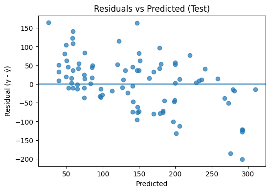

In this lesson we train a DecisionTreeRegressor on the Diabetes dataset.
We will cover splitting criteria, key hyperparameters, pruning via validation, and interpretation (feature importance and partial dependence).
Learning objectives - Explain how regression trees split to reduce squared error. - Tune depth/leaf hyperparameters with cross‑validation (HPC‑friendly). - Diagnose overfitting vs underfitting with plots. - Interpret models using feature importance and partial dependence.
How Regression Trees Work (Theory)
At each node a regression tree chooses a feature \(j\) and threshold \(t\) to split the data into left/right partitions and minimize the impurity (here, total squared error): \[
\text{SSE}(\mathcal{S}) = \sum_{(x_i,y_i)\in \mathcal{S}} (y_i - \bar{y}_{\mathcal{S}})^2.
\] The best split \((j,t)\) maximizes the reduction in SSE: \[
\Delta = \text{SSE}(\mathcal{S}) - \big[\text{SSE}(\mathcal{S}_L) + \text{SSE}(\mathcal{S}_R)\big].
\]
Predictions in a leaf are the mean of training targets in that leaf.
Key hyperparameters control complexity: - max_depth: maximum tree depth (smaller \(\\Rightarrow\) simpler model). - min_samples_leaf: minimum samples per leaf (larger \(\\Rightarrow\) smoother predictions). - min_samples_split: minimum samples to split an internal node. - ccp_alpha: cost‑complexity pruning strength.
Train: RMSE=0.00 MAE=0.00 R^2=1.000
Test : RMSE=70.55 MAE=54.53 R^2=0.061
# Diagnostics: predicted vs actual and residualsimport matplotlib.pyplot as pltimport numpy as np# Predicted vs Actualplt.figure(figsize=(5,5))plt.scatter(y_test, y_pred_test, alpha=0.7)lo =min(y_test.min(), y_pred_test.min())hi =max(y_test.max(), y_pred_test.max())plt.plot([lo, hi], [lo, hi])plt.xlabel("Actual")plt.ylabel("Predicted")plt.title("Predicted vs Actual (Test)")plt.show()# Residuals vs Predictedresiduals = y_test - y_pred_testplt.figure(figsize=(6,4))plt.scatter(y_pred_test, residuals, alpha=0.7)plt.axhline(0)plt.xlabel("Predicted")plt.ylabel("Residual (y - ŷ)")plt.title("Residuals vs Predicted (Test)")plt.show()

Cross‑Validation & Pruning
We tune max_depth, min_samples_leaf, and ccp_alpha using \(k\)‑fold CV.
On some HPC setups, default parallelism can fail; we wrap with the threading backend (or use n_jobs=1).
Best params: {'ccp_alpha': 0.0, 'max_depth': 4, 'min_samples_leaf': 3}
Best CV R^2: 0.284
Test metrics (tuned): RMSE=58.50 MAE=46.47 R^2=0.354
Visualizing the Tree
We can visualize the learned splits. For readability, limit depth (or use the tuned tree if it’s shallow).
# Plot the tree (may be large if depth is high)from sklearn.tree import plot_treeimport matplotlib.pyplot as pltplt.figure(figsize=(12, 6))plot_tree(best_tree, feature_names=X.columns, filled=False, impurity=True, rounded=True)plt.title("Decision Tree (tuned)")plt.show()